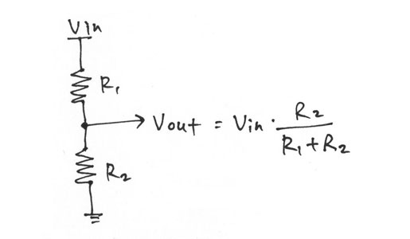

Final Project | Assignments | Download | About | Contact
On wednesday 04.08.2015 we’ve got the tenth online lesson with Neil Gershenfeld.
The next lessons can be found on the Fab Academy account on Vimeo.
For this week the assignment was
** measure something: add a sensor to a microcontroller board that you’ve designed and read it **
For this assignment I’ll make a board to measure static values of resistance. That way I can recognize elements of a set using a kind of “phisical IP”.
To do so I’ll use a voltage divider
